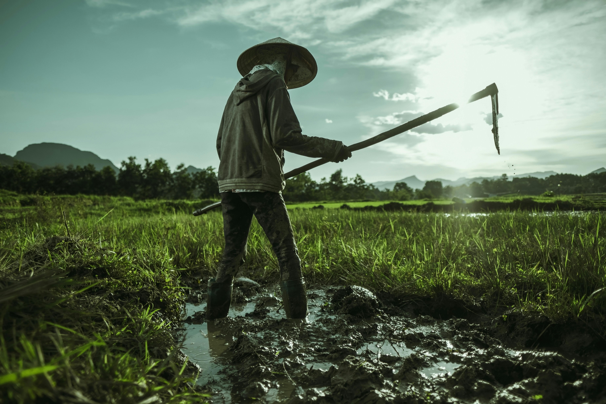
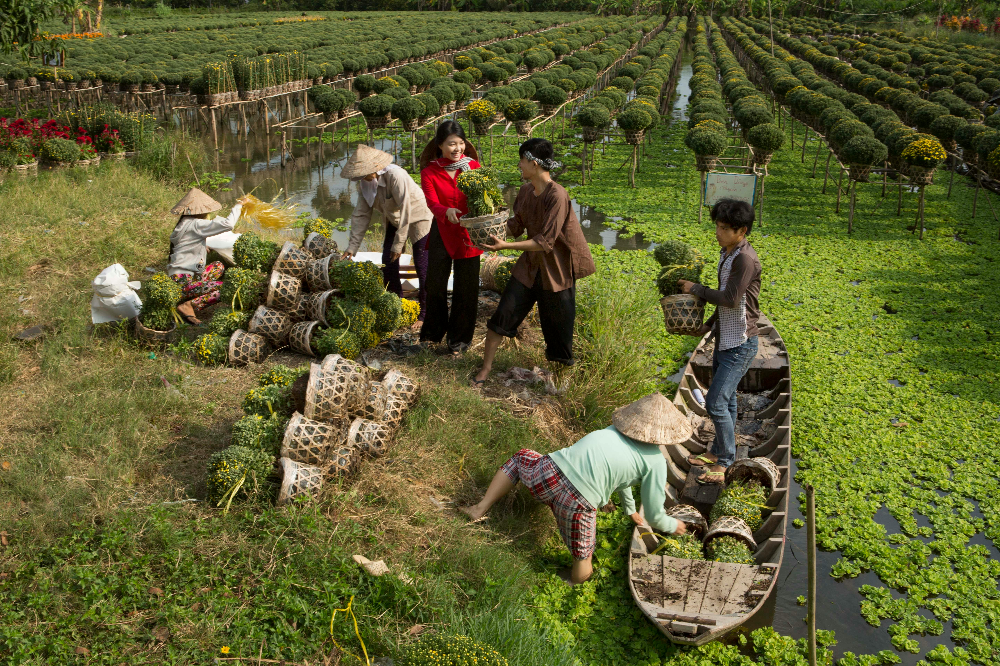
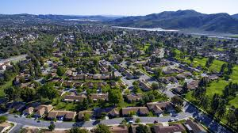
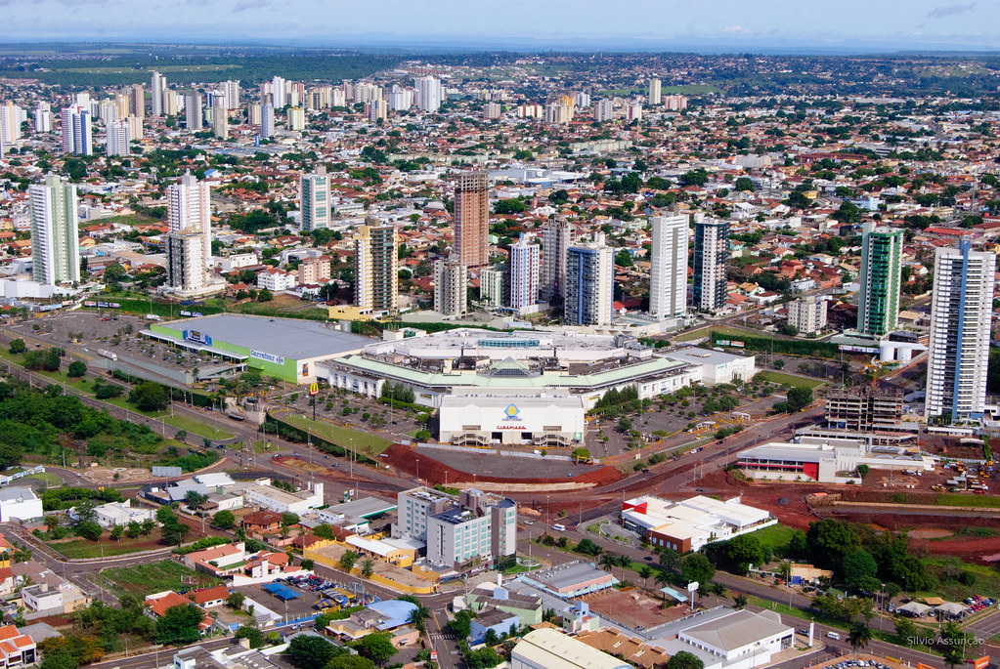

Nesse site, você conhecerá as diferenças e semelhanças de cada uma, além de observar uma galeria
de fotos que explora as diferentes culturas.
O campo é caracterizado por uma comunidade rural, geralmente centrada na agricultura, com uma forte conexão com a terra e uma estrutura social mais tradicional. A cidade, por sua vez, é um espaço urbano, caracterizado por uma comunidade diversificada, economia mais complexa e uma estrutura social mais fluida.
Imagens




Semelhanças:
Interdependência:
A produção rural é crucial para o abastecimento da cidade, enquanto as cidades oferecem oportunidades econômicas e tecnologias para o campo, demonstrando uma relação de troca e complementaridade.
Interação Social:
A dinâmica social e cultural em ambos os espaços é influenciada pela interação entre as pessoas, seja em eventos sociais, atividades comunitárias ou no dia a dia.
Diferenças:
Ritmo de Vida e Estilo de Vida:
Rural: Geralmente mais lento e menos estressante, com o tempo dedicado a atividades agrícolas e familiares. Urbano: Mais rápido e frenético, com foco em trabalho, transporte e atividades urbanas.
Estrutura Social:
Rural: Comunidades mais fechadas e tradicionais, com forte ligação entre as famílias e a terra. Urbano: Comunidades mais diversificadas, com grande fluxo de pessoas e diferentes grupos sociais.
Receba mais informações sobre esse tema.
Assine nossa página para não perder nenhuma novidade.